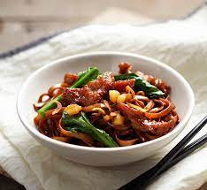

Ingredients
- 500g Hokkien flat yellow noodles
- 300g lean pork, thinly sliced
- 1 packet cai xin, cut and wash (separate the stems from leaves)
- 200g sweet potato flour (may need more as required)
- 4-5 shallots, thinly sliced
- 4 cloves garlic, minced
- 3-4 tbsp dark soy sauce
- 1 tbs chicken powder (optional)
- 1-2 tsp light soy sauce (if not using chicken powder)
- 1/2 tsp white pepper
- 2-3 cups water
- Lard/Vegetable oil
Marinade for pork
- 1 tbs light soy sauce
- 1 tbs oyster sauce
- 1/2 tbs dark soy sauce
- 1/2 tbs dark soy sauce
- 1/2 tsp white pepper
Instructions
- Marinate pork for at least 4 hours.
- Coat pork with sweet potato flour. The flour will be absorbed in the beginning. Keep adding flour until the pork slices feel dry and have visibly been coated with the flour.
- Add the pork slices (in batches) one piece a time into hot oil and deep fry until cooked through. Drain on kitchen towels and set aside.
- In a hot wok, saute the shallot and garlic in hot lard or vegetable oil until soft.
- Add the cai xin stems and cook for one minute.
- Add the noodles.
- Drizzle dark soy sauce and water. Stir to combine.
- Add the cai xin leaves and pork to the noodles.
- Stir until mixed.
- Cover the wok and braise the noodles until the liquid has almost completely evaporated. Remember to stir once in a while.
- Add white pepper, chicken powder, give the noodles a final mix.
- Sprinkle fried shallots and lard over the noodles. Serve immediately.